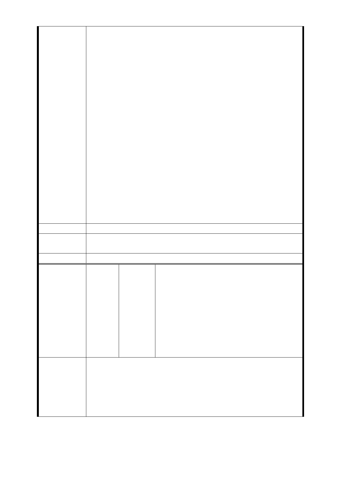

使中央政府予以撥用即可完成出入口之設置，卻捨此簡便程
序不為，反以程序繁雜之本人土地設置為捷運出入口，須經
陳述意見、公展公聽會、聯合開發或公用徵收等侵害本人權
益之方式，倘遇抗爭，更須動用公權力之模式解決，顯然違
背行政法上之比例原則及平等原則。
二、萬大路東園街交叉路口，為交通壅塞路口，該路口有調
撥車道又正臨華中橋往來車潮，車輛轉接水源快速道路，又
距果菜市場不遠，往來人流、車流甚多，上下學時間，又有
大量接送子女的車流，若將捷運出口設於此處，可預見該路
口之車流及大量人流必定致交通打結，顯見該局將出入口規
劃設計於此，對交通動線完全未予考量，未給予車流充分疏
解空間，為嚴重影響車流地點。
三、經近日訪查，捷運局人員亦告知，因基地面積過小，本
處出入口之設計將僅有基本出口，無法規劃無障礙設施出口
之電梯、手扶梯等設備，顯見該局明知將出入口規劃於本處
基地，有上開限制，又見其規劃用地範圍及地點有顯然不當
。
四、綜上，尚祈貴局於本函到後重新檢討出入口設置事宜，
並以變換至國有地之鄰地上設置為佳，以維憲法上保障人民
財產權之實益，實感法便，至為感檮。
建議辦法
市府回應
意見
同編號捷七－1 回應意見。
委員會決議 同編號交一－1 委員會決議。
楊吳○惠、藍洪○美、陳吳○珠、捷八地
主共 56 人、楊○福、張○信、楊○能、
杜○章、楊○銘、廖○澤、洪○長等 4
人、張○寧、洪○棠、龔劉○卿、詹○花、
編
號 捷八-1
陳情人
楊○茂、劉○雄、羅○林、楊○名、韋○
豪、蕭○純、黃○吟、吳○修、楊○雄、
吳○雄、簡李○珠、周○立、趙○麗、黃
○祥、陳○瑩、陳○菊、陳○月、鄭○財、
黃○山、黃○成、洪○壽、捷運萬大線
LG04（捷八）自救會
1.94 年原公開說明於「萬大國小整建」，擅自變更。
2.土地完整，權屬 1 人持有。
陳情理由
3.地上物無，屬空地。
4.幅員 2015 坪空間足夠。
5.不影響天主教玫瑰堂。
6.不用拆遷 60 餘戶，1000 人生計。
- 126 -